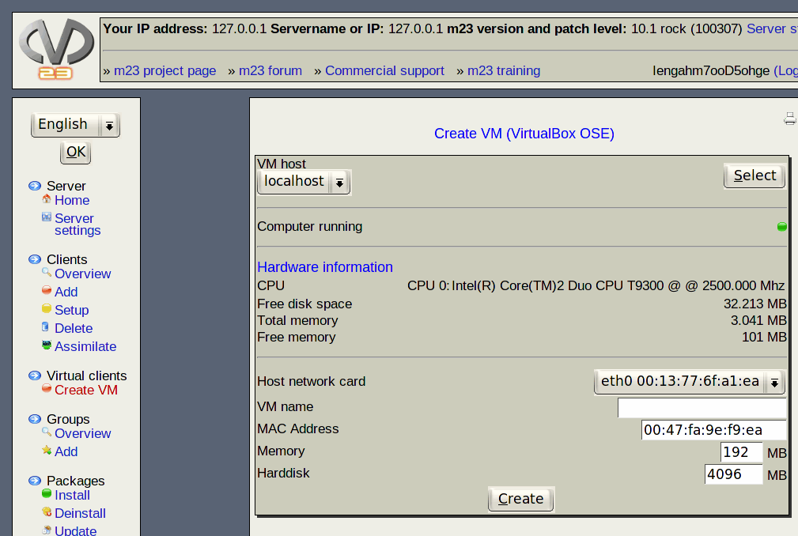

The purpose of this page is to create virtual m23 clients (VMs). VMs share the host's resources and are appearing on the network as "normal" m23 clients. The VM host must be switched on and the m23 virtualisation package must be installed for creating a new VM guest (further information at the bottom of the page).

Subsections
root
2013-08-18